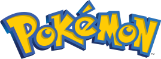

TCG
Magic: The Gathering
Magic: The Gathering (o abreviado, "MTG") es un juego de cartas coleccionables diseñado en 1993 por Richard Garfield, y cuenta con con más de seis millones de jugadores en cincuenta y dos países diferentes.
En cada partida de Magic representa una batalla entre poderosos magos (en el juego conocidos como planeswalkers), en el que cada uno de estos es uno de los jugadores de la partida. Los jugadores pueden usar hechizos (conjuros, artefactos, tierras, criaturas fantásticas, etc.), representados individualmente en cada carta, para derrotar a tus oponentes.
Un sistema organizado de torneos y una comunidad de jugadores profesionales se ha desarrollado alrededor del juego, así como un mercado secundario de cartas. Son valoradas no solo por su escasez, sino también por su valor en el juego, su antigüedad, por ser cartas de "culto" o por el valor estético de las ilustraciones.
Recordá que jugando torneos oficiales en nuestra tienda, estas sumando puntos para clasificar a los torneos más grandes de MTG! No dejes de consultar el calendario de Eventos!
Si quieres aprender a jugar Magic: The Gathering, te dejamos el siguiente VIDEO
Pokemon TCG
La primera edición del juego de cartas, inspirada por el éxito de los videojuegos Pokémon Rojo y Pokémon Azul fue lanzada en 1996 en Japón. Desde entonces se han ido lanzando periódicamente nuevas expansiones que añaden nuevos Pokémon y cartas al juego.
Anualmente se juegan varios torneos con grandes premios, en cartas, merch Jugando en nuestra tienda acumulas puntos para participar de los torneos más grandes del mundo! No dejes de consultar el calendario de Eventos!
Aprovechá para conseguir tus sobres de edición, o mazos preconstruidos para comenzar a jugar!
Si quieres aprender a jugar el TCG de Pokemon, te dejamos el siguiente VIDEO
Yu-Gi-Oh TCG
El famoso juego nipón basado en el manga del mismo nombre, fue lanzado allá por 1999. Fue nombrado el juego de cartas coleccionables con cartas más vendidas en el mundo por el Libro Guinness de récords mundiales el 7 de julio de 2009, con más de 22 mil millones de cartas vendidas alrededor del mundo.
Al igual que los otros juegos de TCG, tendremos que armar una baraja, utilizando cartas que tengan sinergia, combos, hechizos y/o trampas para vencer a nuestro oponente.
En el Spot del Fichin, podés jugar torneos oficiales que te permiten sumar puntos para clasificar a torneos regionales con pasaje y clasificación a tornos internacionales! No dejes de consultar el calendario de Eventos!
Si querés aprender a jugar Yu-Gi-Oh, te dejamos el siguiente VIDEO